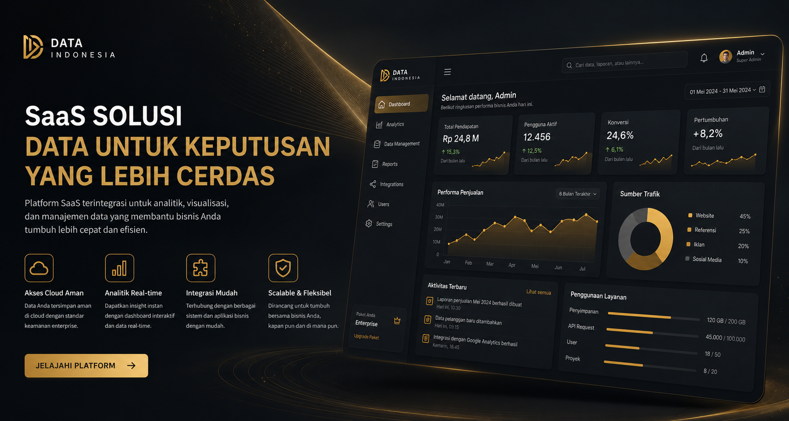

Dampak Kami
Angka yang berbicara
Kepercayaan institusi di seluruh Indonesia terhadap solusi data kami.
0
Klien Institusi
0
Tingkat Kepuasan
0
Provinsi Terjangkau
0
Tahun Pengalaman
Layanan
Solusi data end-to-end
Dari integrasi hingga insight eksekutif — dirancang untuk skala perusahaan.
Integrasi Data
Menyatukan sumber data tersebar menjadi fondasi tunggal yang bersih dan terpercaya.
Analitik Bisnis
Model analitik yang mengubah data mentah menjadi keputusan strategis yang terukur.
Keamanan & Tata Kelola
Kontrol akses, audit, dan kepatuhan untuk melindungi aset data organisasi Anda.
Tentang Kami
Identitas hitam & emas, standar kelas perusahaan
Data Indonesia lahir dari komitmen membangun ekosistem data nasional yang tangguh, transparan, dan siap menghadapi era digital.
- Arsitektur data yang skalabel dan modular
- Tim ahli dengan pengalaman lintas sektor
- Fokus pada performa, keamanan, dan kejelasan insight
Siap mengangkat nilai data Anda?
Mari diskusikan kebutuhan organisasi Anda bersama tim Data Indonesia.
Mulai Konsultasi